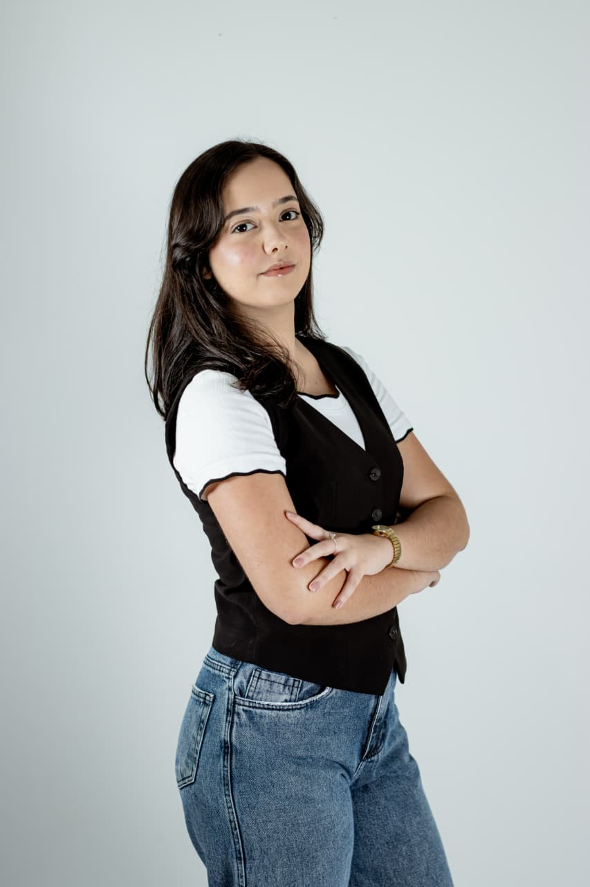
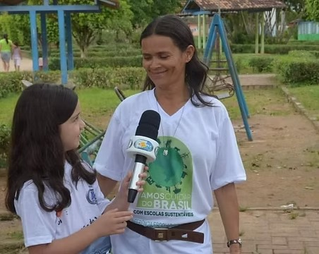
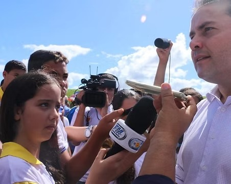
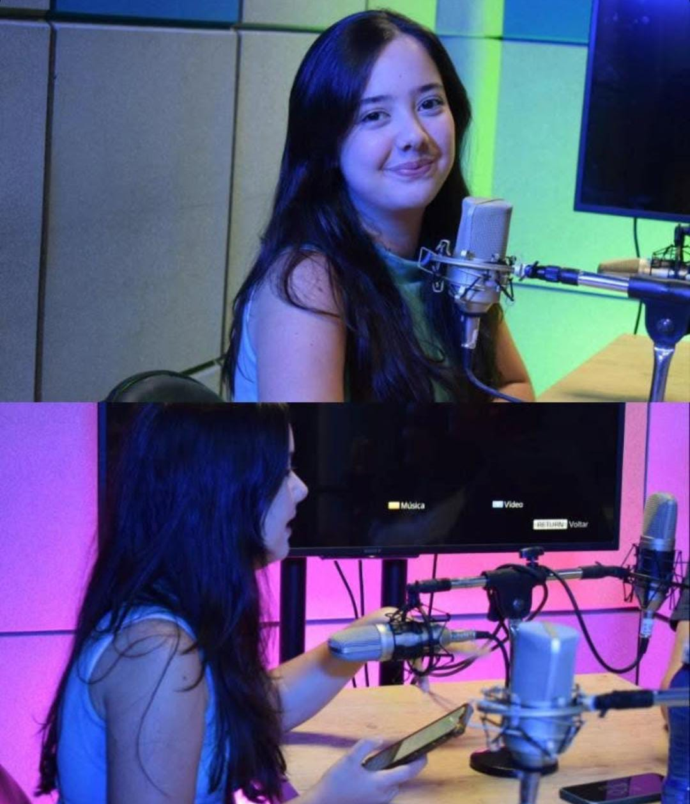
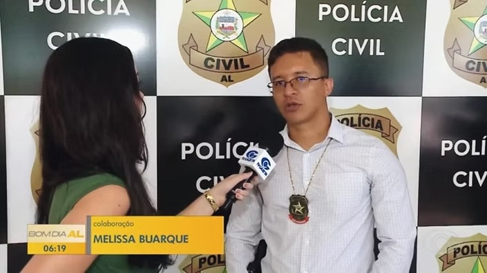
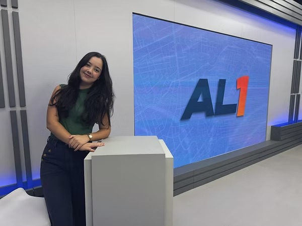
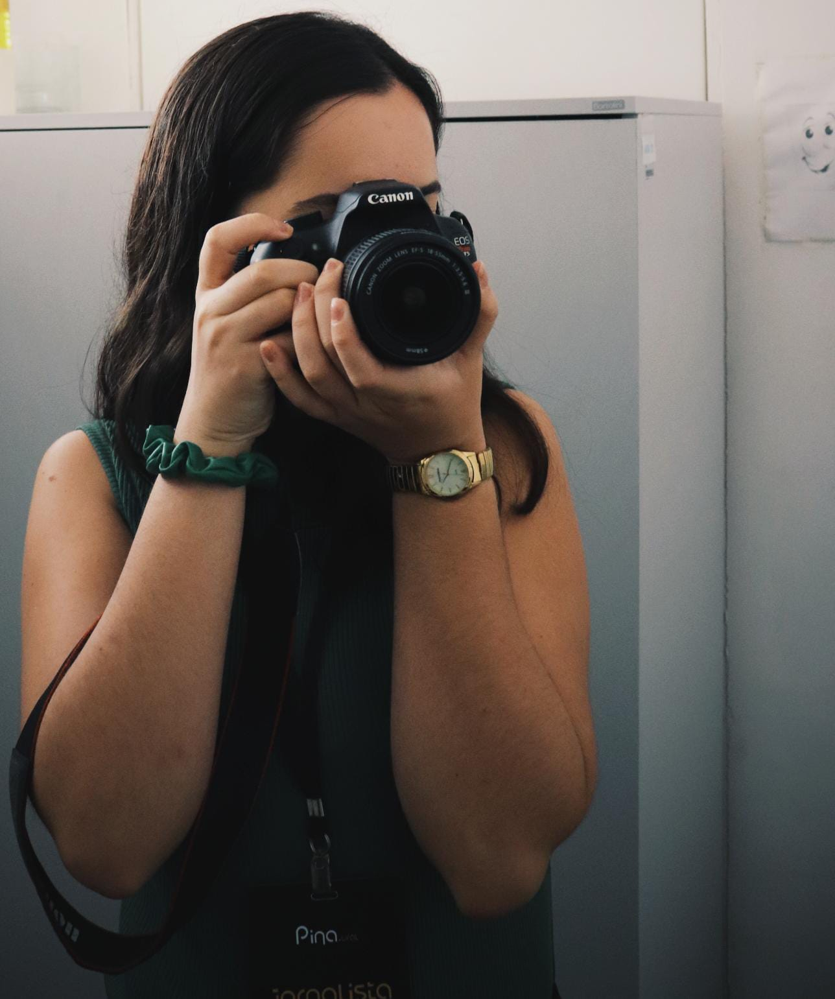
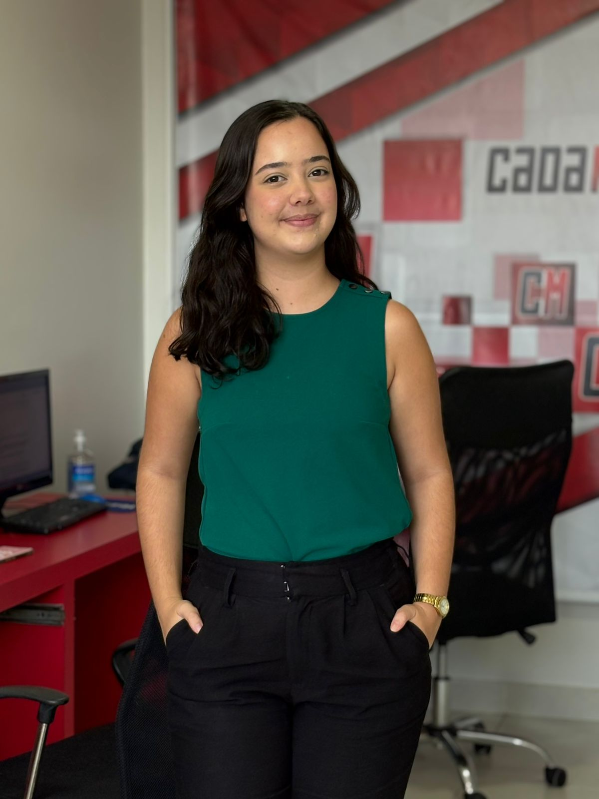
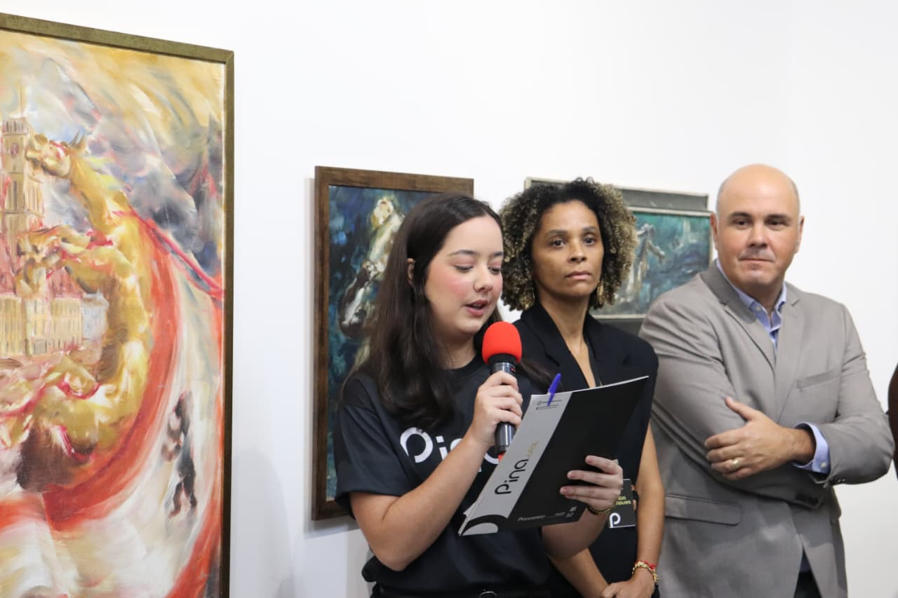

Sobre Mim
Sou Melissa Buarque, de 21 anos, concluinte de Jornalismo da Universidade Federal de Alagoas (UFAL). Escolhi o jornalismo pela possibilidade de conhecer diferentes realidades, contar histórias e transformar acontecimentos em informação. Ao longo da minha formação, construí experiências em rádio, televisão, webjornalismo e mídias digitais, passando por diferentes etapas da rotina jornalística. Tenho especial interesse por jornalismo investigativo e por pautas relacionadas à cultura, ao entretenimento, à tecnologia e à Inteligência Artificial.
Sou curiosa, comunicativa e tenho facilidade para trabalhar em equipe. Gosto de aprender na prática, encarar novos desafios e explorar diferentes possibilidades dentro da comunicação.
Habilidades
- Comunicação
- Escrita
- Conhecimento em Tecnologia e Mídias Sociais
- Adaptabilidade
- Trabalho em equipe
- Proatividade
- Inteligência Emocional
- Criatividade
Informações Adicionais
- Inglês - Avançado
- Espanhol - Básico
- Interesse em entretenimento, cultura, tecnologia e esportes.
Experiências
Rádio Comunitária Campestre FM

Minha história com o jornalismo começou ainda na infância. Aos sete anos, participei do projeto de educomunicação “Guardiões do Vale do Rio Jacuípe”, desenvolvido pela Associação Rádio Comunitária Campestre FM. Foi ali que tive meu primeiro contato com a comunicação e descobri o encantamento pela profissão.
Durante o projeto, tive a oportunidade de cobrir eventos, entrevistar pessoas importantes para a comunidade e desenvolver minha comunicação diante das câmeras. A experiência despertou em mim uma paixão que permanece até hoje.


Anos depois, entre 2022 e 2024, retornei à rádio como repórter e locutora, passando a atuar também nos projetos sociais “Escola nas Ondas do Rádio” e “Casa do Saber Digital”, que oferecem atividades de educomunicação, rádio e outras práticas jornalísticas para crianças e adolescentes.
TV Gazeta de Alagoas

No final de 2023, iniciei meu estágio na TV Gazeta de Alagoas, onde tive meu primeiro contato com a rotina de uma redação de televisão. Comecei na edição do Bom Dia Alagoas, atuando com edição de textos, produção e coordenação de entradas ao vivo.
Em 2024, passei a integrar a equipe do AL1, participando de forma mais direta do processo editorial do telejornal. Durante esse período, também tive a oportunidade de substituir um dos editores durante suas férias, vivenciando de maneira mais completa

Embora a experiência na edição tenha sido fundamental para minha formação, meu objetivo profissional sempre esteve ligado à reportagem de televisão. Por isso, passei a acompanhar equipes em campo, participando da produção de VTs, coleta de sonoras e produção executiva das edições in loco do . Essa vivência me aproximou ainda mais da dinâmica do jornalismo de rua e do processo de construção de uma reportagem desde a pauta até a edição final.
AGÚ — Agência de Marketing

Paralelamente ao estágio na TV Gazeta, atuei na AGÚ, uma agência de marketing formada integralmente por mulheres. Trabalhei na criação e produção de conteúdos para diferentes empresas, desenvolvendo textos para campanhas digitais e materiais de copywriting. Também participei da produção e captação de conteúdos audiovisuais, além do planejamento de publicações e estratégias de comunicação. A experiência ampliou minha visão sobre produção de conteúdo, linguagem digital e construção de narrativas para diferentes públicos.
CadaMinuto

Em abril de 2026, passei a integrar a equipe do portal CadaMinuto, ampliando minha experiência para o jornalismo digital. Atualmente, atuo na produção de notícias e reportagens para o portal e na criação de conteúdos jornalísticos para as redes sociais.
Na rotina da redação, participo da apuração e produção de notícias factuais, acompanhando ocorrências, acontecimentos locais e pautas de interesse público. A experiência também tem me permitido desenvolver maior agilidade na apuração, checagem de informações e construção de textos para o ambiente digital.
Além da cobertura diária, participo da produção de reportagens especiais, desde a elaboração e desenvolvimento de pautas até a realização de entrevistas e apuração de dados. Também já realizei externas, acompanhando acontecimentos em campo e produzindo conteúdo diretamente dos locais das pautas.
Em 2026, passei ainda a atuar na cobertura das eleições, experiência que tem ampliado meu contato com o jornalismo político e com a cobertura de um dos principais acontecimentos da agenda pública.
A experiência no CadaMinuto tem sido fundamental para consolidar minha atuação como repórter, unindo a agilidade exigida pelo jornalismo digital à apuração e à construção de histórias mais aprofundadas.
Pinacoteca da UFAL

Como bolsista de Jornalismo em um projeto de extensão da Universidade Federal de Alagoas, atuo na assessoria de comunicação da Pinacoteca da Ufal, um museu universitário de arte contemporânea, contribuindo para a divulgação de exposições, atividades culturais e ações educativas.
Minha atuação envolve produção de textos jornalísticos e institucionais, planejamento de conteúdos, cobertura de eventos, produção de materiais para redes sociais e relacionamento com a imprensa. Também tive a oportunidade de atuar como mestre de cerimônias na abertura de exposições e eventos do museu, experiência que fortaleceu minha desenvoltura na comunicação oral e na condução de eventos.
O trabalho na Pinacoteca tem sido uma oportunidade de unir duas áreas que despertam meu interesse: o jornalismo e a cultura, além de desenvolver habilidades de comunicação institucional, produção de conteúdo e assessoria de imprensa.